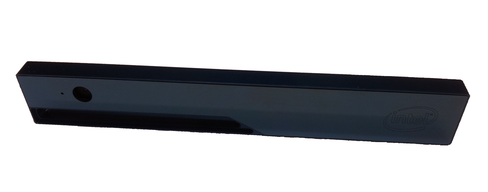

在 Ubuntu 上安装英特尔 RealSense R200 的驱动程序
本教程旨在提供有关如何在 linux 环境中安装英特尔实感 r200 相机头的相机驱动程序的说明, 以便可以通过机器人操作系统 (ros) 访问收集到的图像。 实感 r200 相机头如下图所示:

驱动程序包的安装是在 Virtual Box 中作为虚拟机运行的 ubuntu 操作系统 (os) 上执行的。 运行 Virtual Box 的宿主机、虚拟机的规格如下:
- 主机操作系统：Windows 8
- 处理器：Intel(R) Core(TM) i7-4702MQ CPU @ 2.20GHz
- Virtual Box：Oracle VM。 版本 5.0.14 r105127
- 扩展：安装了 Virtual Box 的扩展包（用于 USB3.0 支持）
- 客户机操作系统：linux-ubuntu 14.04.3 LTS
本教程按以下方式排序: 在第一部分中, 演示如何在 Virtual Box 中安装 ubuntu 14.04 作为客户机系统。 第二部分会演示如何安装 ROS Indigo 和相机驱动程序。 随后频繁使用的短语示意如下：
- 虚拟框（VB）：运行不同虚拟机的程序。 此处使用 Oracle 虚拟机。
- 虚拟机（VM）：作为来宾系统在虚拟框中运行的操作系统。 此处使用 Ubuntu。
在虚拟机中安装 Ubuntu 14.04.3 LTS
- 创建新的虚拟机 (vm): linux 64位。
- 下载 ubuntu 14.04.3 lts 的 iso 文件: (ubuntu-14.04.3-desktop-amd64.iso)。
- Ubuntu 的安装:
- 在安装过程中，保留以下两项:
- 安装时下载更新
- 安装此第三方软件
- 在安装过程中，保留以下两项:
- 安装完成后，您可能需要启用 Virtual Box 在整个桌面上显示 ubuntu：
- 启动虚拟机 ubuntu 并登录，点击 Devices->Insert Guest Additions CD image。
- 点击 Run 并在 Ubuntu 弹出的窗口上输入密码。
- 等待安装完成，然后重新启动。 现在，应该可以在整个桌面上显示 VM。
- 如果 ubuntu 中弹出一个窗口, 询问是否更新, 请在此时拒绝更新。
- 在 Virtual Box 中启用 USB 3 控制器:
- 关闭虚拟机。
- 转到 "虚拟机" 的设置到菜单选择 USB，然后选择: "USB 3.0(xHCI)"。 只有在安装了虚拟框的扩展包时, 才有可能执行此操作。
- 再次启动虚拟机。
安装 ROS Indigo
- 按照 ROS ndigo installation guide 中给出的说明:
- 安装桌面完整版。
- 执行 "初始化 rosdep" 和 "环境设置" 部分中描述的步骤。
安装摄像头驱动
- 安装 Git
sudo apt-get install git
下载并安装驱动
- 获取 RealSense_ROS repository：
bash git clone https://github.com/bestmodule/RealSense_ROS.git
- 获取 RealSense_ROS repository：
参照 here 的介绍说明。
无论要不要安装如下包都敲击回车：
Intel Low Power Subsystem support in ACPI mode (MFD_INTEL_LPSS_ACPI) [N/m/y/?] (NEW)
Intel Low Power Subsystem support in PCI mode (MFD_INTEL_LPSS_PCI) [N/m/y/?] (NEW)
Dell Airplane Mode Switch driver (DELL_RBTN) [N/m/y/?] (NEW)
- 进程安装结束时如下错误信息会出现，但不应该导致驱动故障：
rmmod: ERROR: Module uvcvideo is not currently loaded
安装结束后，重启虚拟机。
测试摄像头驱动：
- 使用 USB 线缆，一头连接电脑的 USB3 接口，另一端连接 Intel RealSense 相机。
- 点击 Virtual Box 菜单栏中的 Devices-> USB > Intel RealSense 3D Camera R200，以便将相机 USB 连接转发到虚拟机。
- 执行文件 [unpacked folder]/bin/dsreadcamerainfo：
- 如果出现以下错误消息，请拔下相机 (从计算机物理上拔下 usb 电缆)。 再次插入 + 点击 Devices->USB-> Intel Corp Intel RealSense 3D Camera R200， 再次在虚拟框的菜单栏中，并再次执行文件 [unpacked folder]/bin/dsredcamerainfoinfoinfoinfo。
DSAPI call failed at ReadCameraInfo.cpp:134! - 如果相机驱动程序工作正常并识别 Intel RealSense R200，您应该看到有关 Intel RealSense R200 相机头的特定信息。
- 如果出现以下错误消息，请拔下相机 (从计算机物理上拔下 usb 电缆)。 再次插入 + 点击 Devices->USB-> Intel Corp Intel RealSense 3D Camera R200， 再次在虚拟框的菜单栏中，并再次执行文件 [unpacked folder]/bin/dsredcamerainfoinfoinfoinfo。
ROS 节点的安装和测试：